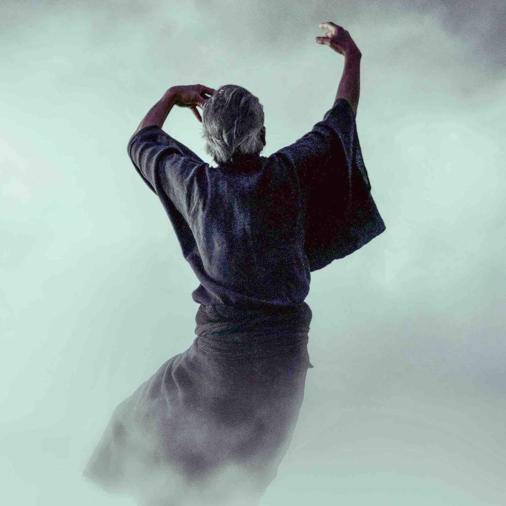

Acting
The first-year acting class is divided into two twelve-week studio courses and eight weeks of rehearsal and performance.
The first half concentrates on the fundamentals of acting. The second half builds on this. Then the student will participate in an "open study" of the basics while performimg in a classic play.
Directing
The first-year directing class covers the fundamentals of film-making with an emphasis on controlling the artistic and dramatic aspects of the screenplay.
Some of the topics covered are the choice of cast mambers, production design, and the creative aspects of film-making. Also explored is the guidance of the technical crew and actors.
Cinematography
The direction of photography is the science or art of motion-picture photography either with digital technology or with analog stock.
The course will feature hands on experience with cinematography as the student creats a short film based on his or her own sceenplay. The student will choose the content as well as the technical crew and the cast members.